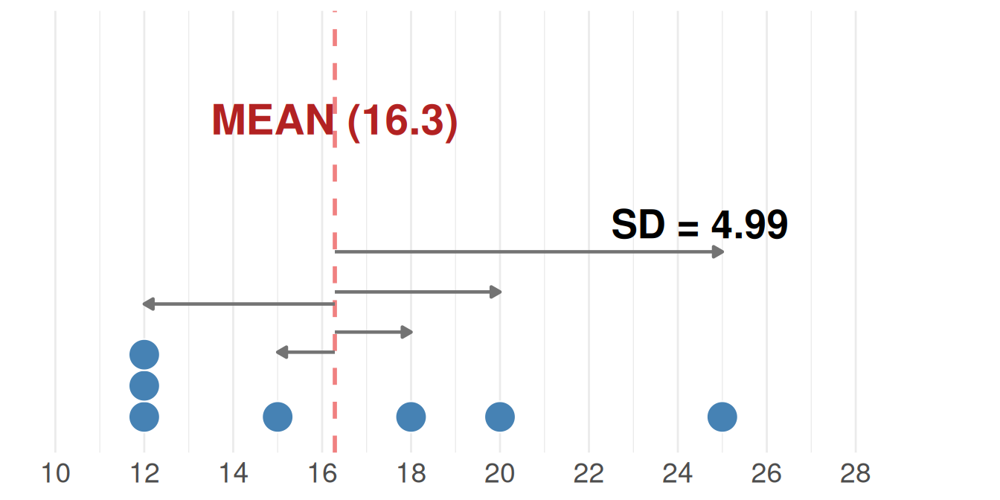
Sampling and estimation
ETX1100/5900 | Business Statistics
✉ ETX5900.AllCampuses-x@monash.edu
8 December 2026
Save these slides as a PDF
Press E, then Ctrl/Cmd + P and choose Save as PDF.
OR
Click ☰ (menu) > Tools > PDF export mode, then Ctrl/Cmd + P and choose Save as PDF.
Today’s roadmap
- Recap
- Sample distribution
- Boba sales
- Sampling variability
- Sample distribution
- Boba sales
- How to reduce sampling variability?
- Increase sample size
- CLT
- Activity - Normal PDF known SD
- How to we communicate uncertainty?
- CI
- 10 MIN BREAK
- Do you know the population SD?
- Yes use Z
- No use t
- Proportion
- Boba membership sign ups
- Formula
- Use Z distribution
- Activity
- Exercise
On last episode…
Population and sampling
Population
- All members of the group we want to draw a conclusion about.
- Population mean (\mu) and standard deviation (\sigma)
Sample
- A subset of the population used to estimate its characteristics.
- We use statistics to describe the sample
- Sample mean (\bar{x}) and standard deviation (s)
=AVERAGE(...)=STDEV.S(...)
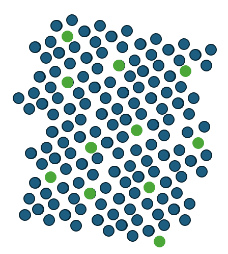

Spread and SD
How much do the values vary around the mean?
s = \sqrt{\frac{\sum_{i=1}^{n}(x_i-\bar{x})^2}{n-1}}
- x_i: an individual value
- \bar{x}: sample mean
- n: number of observations
- s has the same unit as the data
Probability as a density function (PDF)
A probability density function describes how likely the range of continuous values in a population
Histogram

Probability density function
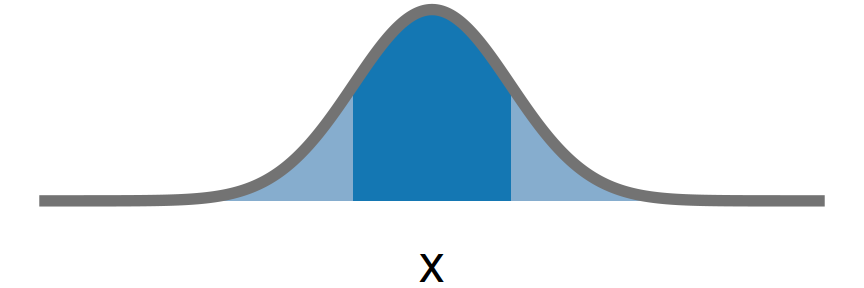
The Normal distribution:
\displaystyle X \sim \mathcal{N}(\mu,\sigma)
The total area under the curve is 1.
Sampling distribution
Boba sales 🧋
What is the average price of a cup of boba in our sample of 5 random people?
Sampling variability
Each time we draw a sample, the sample mean is different
Standard error (SE) measures how much a sample mean varies from the population mean across repeated samples
\mathrm{SE}(\bar X)=\frac{s}{\sqrt n}
- s sample SD
- n sample size
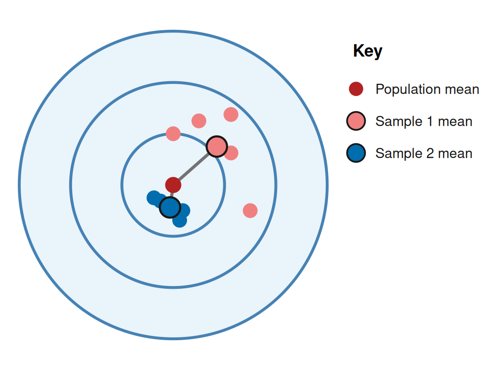
SE \approx SD of sample means
Sampling variability
Sampling distribution
A sampling distribution represents all possible values a sample statistic (\bar{x}) could take and how likely each value is
Sample means
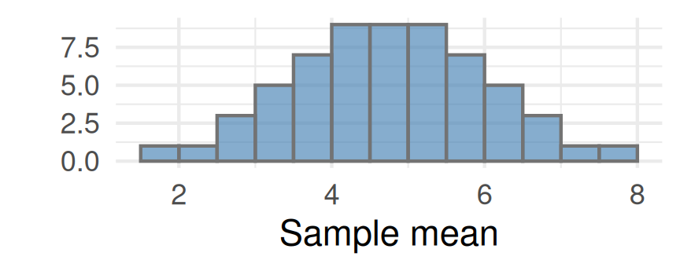
Tip
- Boba
Sample meanstab: customers vary. - Here: sample averages vary.
Sampling distribution
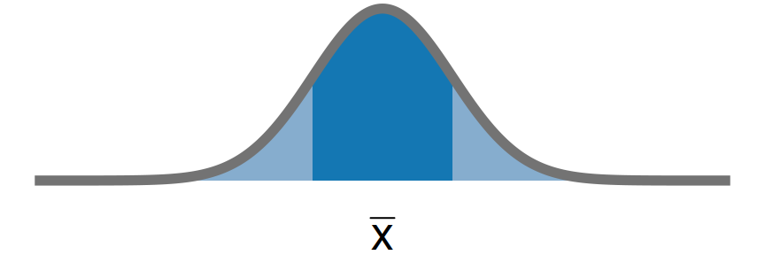
\displaystyle \bar{X} \sim \mathcal{N}\left(\mu, \frac{\sigma}{\sqrt{n}}\right)
How to reduce sampling variability?
⬆️ Sample size
SE is a function of sample size (n)
\mathrm{SE}(\bar X)=\frac{s}{\sqrt n}
- As n increases, the denominator increases
- This makes our fraction smaller = our sampling SE decreases
⬆️ Sample size
As n increases, \mathrm{SE}(\bar X)=\sigma/\sqrt n decreases, so the sampling distribution narrows around \mu.
What if my population is skewed?
- CLT
- Remake app but skewed distribution
- Draw samples, get means
Boba prices 🧋
Boba sampling simulator — interactive in the HTML slides.
Simulate samples of n cups from X \sim \mathcal{N}(8, 3) (AUD; SD = $3.00). Compare individual prices, repeated sample means and a 95% confidence interval.
- Sample mean: \bar{x}; sample SD: s; estimated SE: s / \sqrt{n}.
- Theoretical sampling distribution: \bar{X} \sim \mathcal{N}(8, 3 / \sqrt{n}).
- 95% confidence interval: \bar{x} \pm t_{0.975,n-1} s / \sqrt{n}.
Prices are illustrative teaching assumptions.
Learning Objectives
Describe the role of statistical inference and apply inference methods to single populations. Textbook references: Berenson et al Basic Business Statistics 5th edition, Chapter 6 Sections 6.1-6.2 Chapter 7, Sections 7.1-7.5. Chapter 8, Sections 8.1-8.3
The Basics of Sampling Distribution
Sample statistic is only an estimate of the truth Since the sample may vary, any sample statistic is not exact and has variation/error around them. The smaller the error, the greater the accuracy. Assume we take data samples repeatedly, and compute sample means as the statistic for each set of sample. Then we would have the sampling distribution of the sample mean to portray its variability A sampling distribution is the probability distribution of a sample statistic. (eg: Xbar has a sampling distribution and p also has a sampling distribution)
Source: Workshop_slides_Week_3_with_solutions.pdf, page 3
Visual from source page 3.
Sampling Distribution of the Sample Mean
The sampling distribution of the sample mean describes how \bar{X} varies from sample to sample. It quantifies uncertainty in the estimate of the population mean.
If the population variable has a normal distribution,
X \sim N(\mu, \sigma^2), \qquad \bar{X} \sim N\left(\mu, \frac{\sigma^2}{n}\right).
The standard error is the standard deviation of the sampling distribution:
\mathrm{SE}(\bar{X}) = \frac{\sigma}{\sqrt{n}}.
As sample size n increases, the standard error decreases and \bar{X} gives a more precise estimate of \mu.
Source: Workshop_slides_Week_3_with_solutions.pdf, page 4
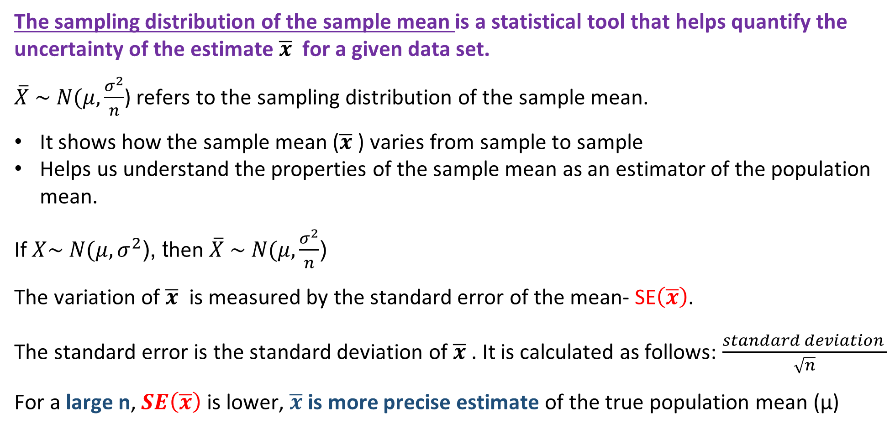
Visual from source page 4.
Sampling distributions for different sample sizes
The following results are based on all possible samples of size n. The sampling distribution has \mu_{\bar{x}} = 3.5 and population standard deviation \sigma = 1.708.
Compare the standard deviation of the sample mean, \sigma_{\bar{x}}, with \sigma:
| Sample size (n) | Standard error (\sigma_{\bar{x}} = \sigma / \sqrt{n}) | Value |
|---|---|---|
| 5 | 1.708 / \sqrt{5} | 0.764 |
| 10 | 1.708 / \sqrt{10} | 0.540 |
| 25 | 1.708 / \sqrt{25} | 0.342 |
The standard deviation of the sample mean is smaller than \sigma. As sample size increases, \sigma_{\bar{x}} decreases, so \bar{X} tends to fall closer to \mu.
Source: Workshop_slides_Week_3_with_solutions.pdf, page 5
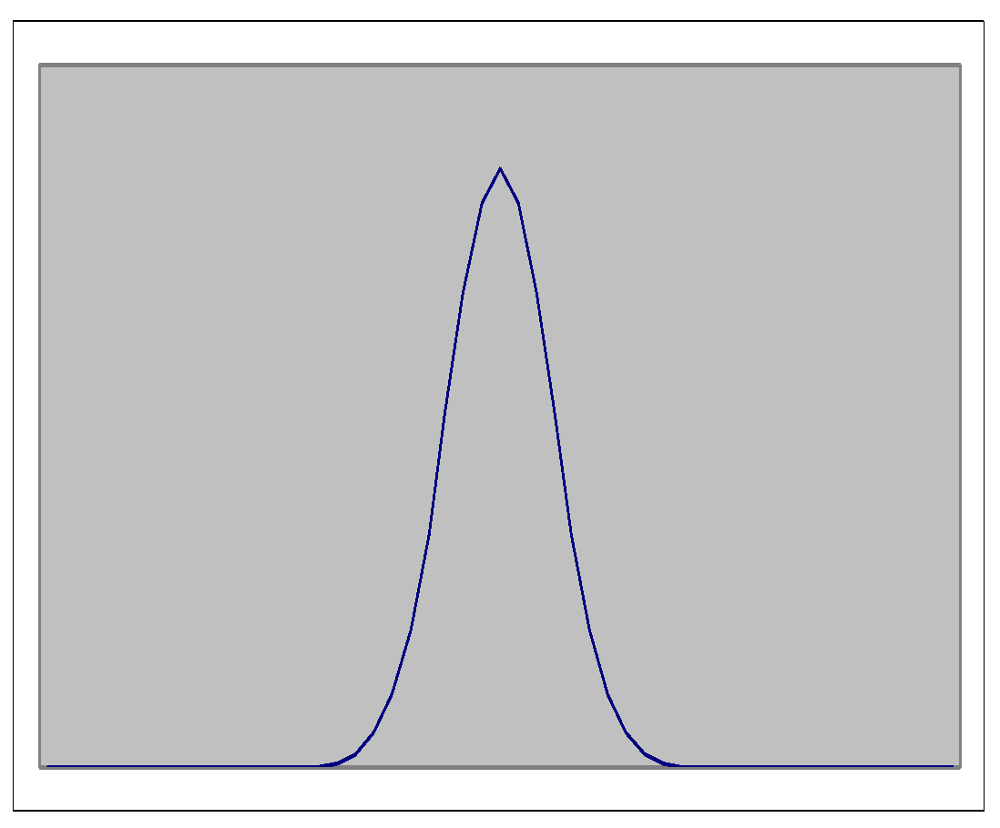
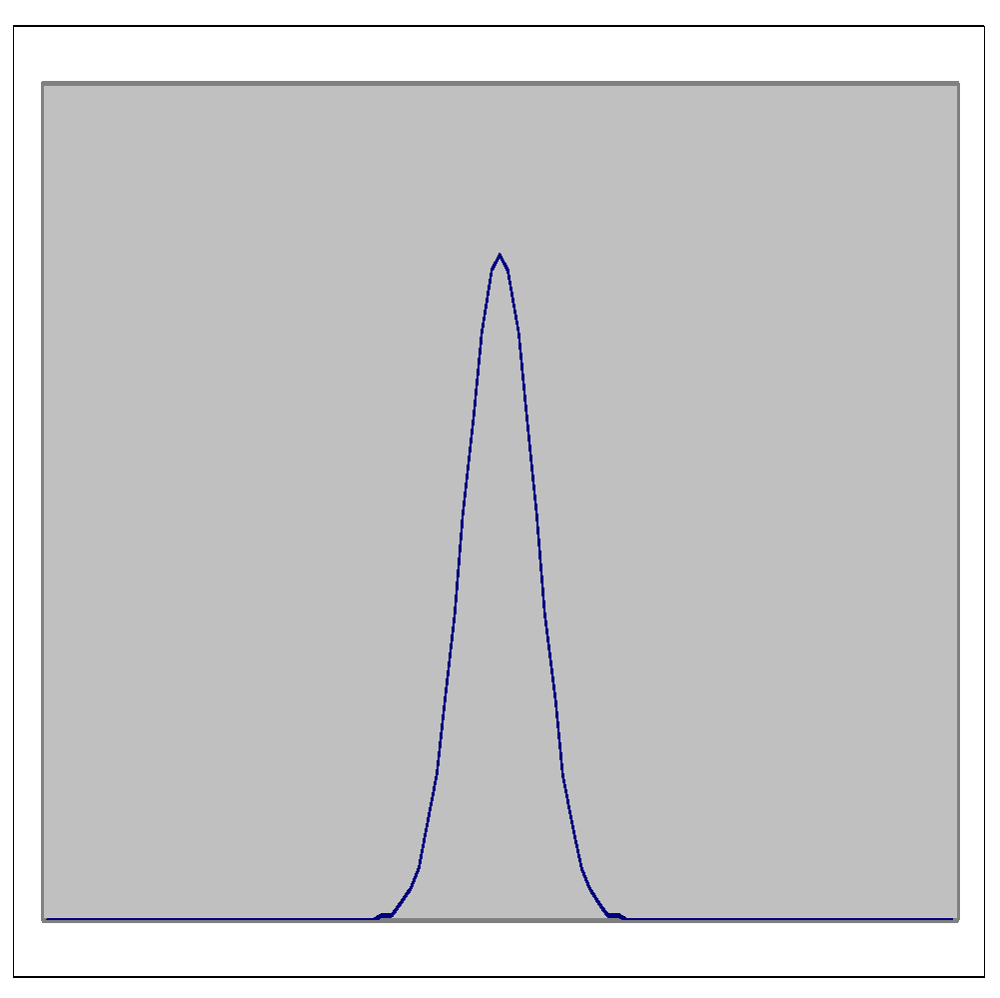
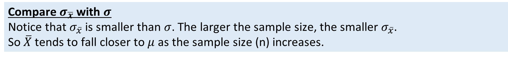
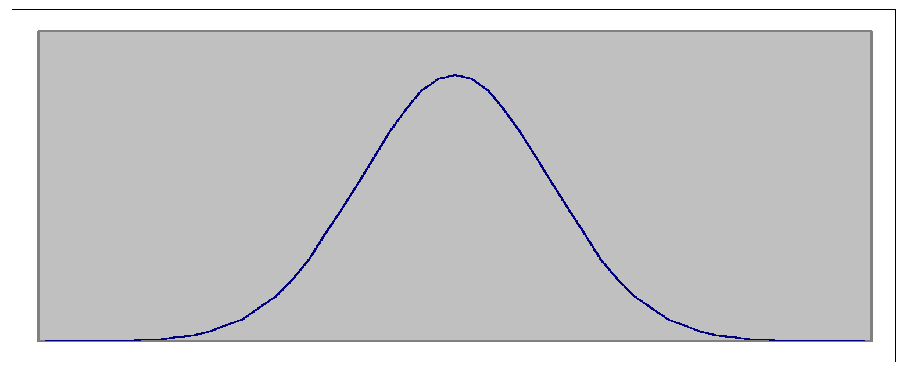
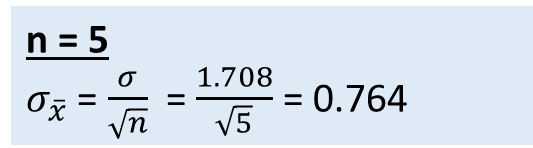
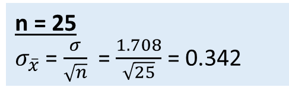
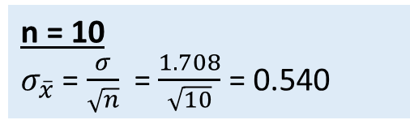
In other words, regardless of the distribution of the original population,
Regardless of the population distribution, the distribution of the sample mean is approximately normal when the sample size is sufficiently large. This is the Central Limit Theorem (CLT); the approximation improves as n increases.
For a population with mean \mu and standard deviation \sigma,
\bar{X} \approx N\left(\mu, \frac{\sigma^2}{n}\right), \qquad \mathrm{SE}(\bar{X}) = \frac{\sigma}{\sqrt{n}}.
Source: Workshop_slides_Week_3_with_solutions.pdf, page 6
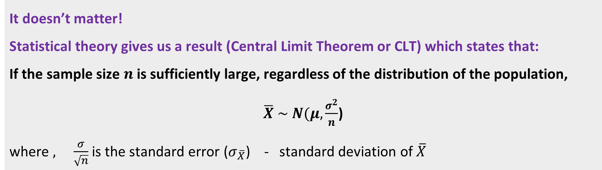
Visual from source page 6.
Central Limit Theorem
https://www.youtube.com/watch?v=jvoxEYmQHNM
Source: Workshop_slides_Week_3_with_solutions.pdf, page 7
Visual from source page 7.
UrbanStyle is a popular retail store that tracks customer spending to optimise staffing, stock levels, and promotional strategies. Past data indicate that the distribution of individual customer purchase amounts is normal, with mean purchase amounts of $25 and a standard deviation of $8
You have been asked to analyse spending patterns to support decisions for an upcoming promotional event. The retail store defines a “moderate purchase” as spending between $15 and $35.Using the information above, calculate the probability that a randomly selected customer makes a moderate purchase. b) Store managers want to design a promotion that targets the top 25% of customers by spending. This will help managers set a threshold for premium rewards. Find the dollar amount such that 75% of customers spend no more than this value. c) On a particular weekend, a random sample of 15 customers was taken to estimate average spending.Assuming the store’s spending distribution remains unchanged, calculate the probability that the sample mean purchase amount for these 15 customers is not more than $30. 8 Task 1: Customer Spending
The retail store defines a “moderate purchase” as spending between $15 and $35.Using the information above, calculate the probability that a randomly selected customer makes a moderate purchase
9 Solutions for Task 1: Customer Spending 15 -1.25 0 1.25 25 35 X scale Z scale
Source: Workshop_slides_Week_3_with_solutions.pdf, page 9
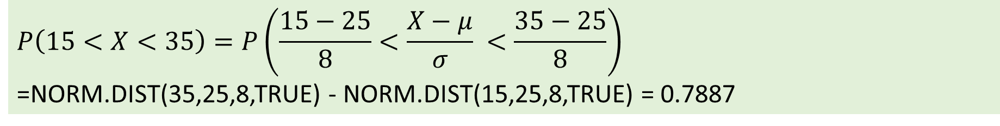
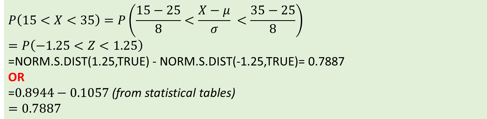
b)Store managers want to design a promotion that targets the top 25% of customers by spending. This will help managers set a threshold for premium rewards. Find the dollar amount such that 75% of customers spend no more than this value.
10 Solutions for Task 1: Purchase Amounts 25 x ? 0 0.67 Z scale X scale 0.75 PX\leq{}x=0.75 Norm.inv(0.75,25,8) = 0.303959 \approx{} \$30.40 OR To get the Z value: From Excel: = norm.s.inv(0.75) = 0.67449 From tables: Z=0.67 (refer to videos) Z = X - \mu{}\sigma{} 0.67 = = X -258 X = 25 + (0.67)8 = 30.3959 \approx{} \$30.40
Source: Workshop_slides_Week_3_with_solutions.pdf, page 10
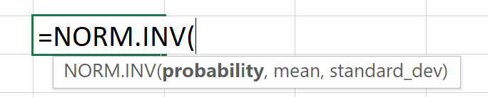
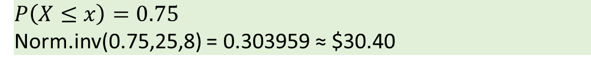
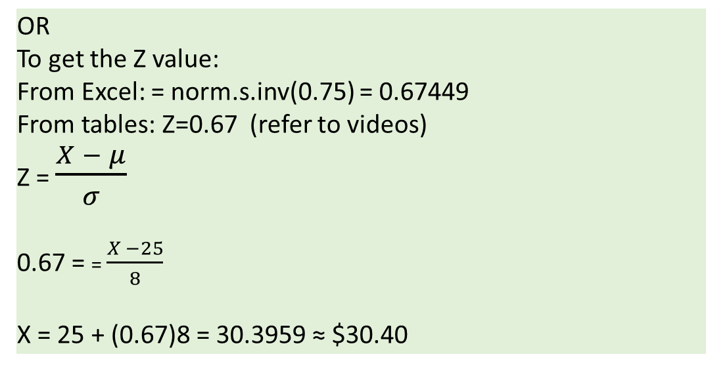
Suppose it is known that the distribution of purchase amounts by customers entering a popular retail store is normal with mean $25 and standard deviation $8.
Suppose a random sample of 15 customers who entered this popular retail store was taken. c) Calculate the probability that their mean purchase amount is not more than $30. 11 Solutions for Task 1: Purchase Amounts Since X~ N(μ, σ2), then X ~ N(μ, σ2n)
Source: Workshop_slides_Week_3_with_solutions.pdf, page 11
A consulting firm is preparing a report for a group of employers about graduate starting salaries. A recent national survey reports that the average weekly income of graduates one year after graduation is $600, with a standard deviation of $100. The distribution of individual weekly incomes is known to be non-normal (some graduates earn much more than others).
For a client presentation, an analyst at the consulting firm takes a random sample of 50 graduates from the survey data. What is the probability that the mean weekly income of this sample of 50 graduates is less than $580? 12 Task 2: Weekly Income of Graduates
13
Solutions for Task 2: Weekly Income of Graduates PX<580=PX - \mu{}\sigma{}n<580-60010050 P(Z<-1.414) = 0.07865 Norm.dist(580,600,100/sqrt(50),true) = 0.07865
Source: Workshop_slides_Week_3_with_solutions.pdf, page 13
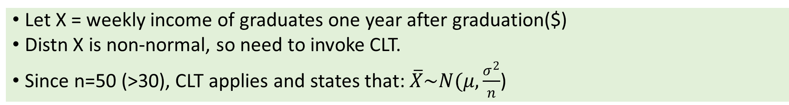
14
Task 3: Call Centre Performance Analysis (in your own time) A telecommunications company closely monitors its call-centre operations to maintain high service standards. According to company reports, the average call handling time is 6.5 minutes, with a standard deviation of 1.2 minutes. To verify whether daily performance aligns with expectations, a team leader reviews a random sample of 16 customer calls from the previous shift. Assuming the company’s claim is accurate and call handling times are normally distributed, the probability that the sample mean of the 16 calls falls between 6.0 and 7.0 minutes is 0.9044. Is this probability calculation valid given the small sample size (n = 16)?Support your explanation with a discussion of population distribution, sample size, and whether the Central Limit Theorem is required in this case.
15
Solutions for Task 3: Call Centre Performance Analysis (in your own time) A telecommunications company closely monitors its call-centre operations to maintain high service standards. According to company reports, the average call handling time is 6.5 minutes, with a standard deviation of 1.2 minutes. To verify whether daily performance aligns with expectations, a team leader reviews a random sample of 16 customer calls from the previous shift. Assuming the company’s claim is accurate and call handling times are normally distributed, the probability that the sample mean of the 16 calls falls between 6.0 and 7.0 minutes is 0.9044. Is this probability calculation valid given the small sample size (n = 16)?Support your explanation with a discussion of population distribution, sample size, and whether the Central Limit Theorem is required in this case. Yes the answer is valid. Although the sample size is only 16, the parent population is normally distributed. We can assume that the mean of the random sample is also normally distributed. Therefore, CLT is not required. In other words, since X ~ Nμ,σ2 then X ~ Nμ,σ2n
Source: Workshop_slides_Week_3_with_solutions.pdf, page 15
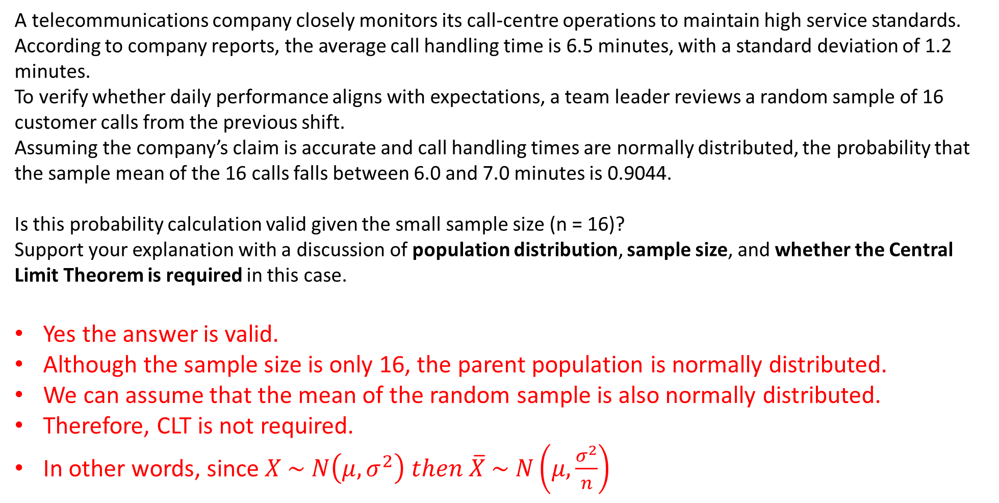
Visual from source page 15.
There are two types of estimates:
Point Estimate A single value that estimates a population parameter Interval Estimate A range of values within which the population parameter probably lies. This range is known as a confidence interval estimate Point estimates alone do not show the uncertainty caused by sampling error. Better approach: give a range of values within which the unknown population parameter is thought likely to lie. We refer to this range of plausible values as a confidence interval Confidence interval = plausible range of the unknown population mean given some level of confidence, based on our sample Part 2: Estimation of the true population mean (μ)
\bar{X} \pm Margin of error
Point Estimate / sample mean (\bar{X}) is only an estimate of the true population (\mu) Critical Value: A value that embodies the desired level of confidence (1-\alpha). Typical levels of confidence are 90%, 95% or 99%. Standard error: A measure of the error associated with the point estimate. Basic Format of an Interval Estimate (of the Population Mean): \bar{X} \pm \text{Critical Value} \times \text{Standard Error}. x\pm{}Crit Value∗Std Devn OR
Source: Workshop_slides_Week_3_with_solutions.pdf, page 17
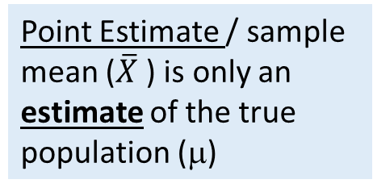
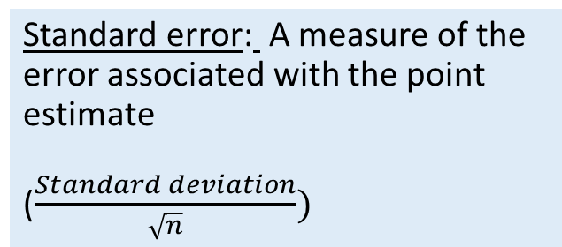
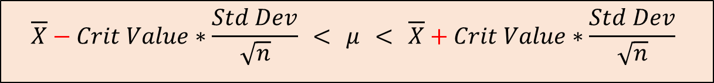
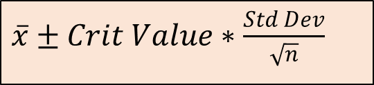
Business Examples: Confidence Interval Estimation
- A retail company wants to understand how much their customers typically spend per visit in their stores. They take a random sample of 80 customers and find that the average spend is $52, with a standard deviation of $10. Calculate a 95% confidence interval for the average customer spend. Can be used to forecast revenue, plan marketing strategies
- An investment analyst is evaluating the performance of a new mutual fund. They randomly select 36 months of past performance data and find that the average monthly return is 1.8%, with a standard deviation of 0.7%. Calculate a 95% confidence interval to estimate the fund’s true average monthly return. Can be used to compare with other investment options, determine if the return justifies the risk
- A company wants to estimate the proportion of people in their target market who recognise their new logo. They randomly survey 150 people, and 96 of them say they recognise the logo. Calculate a 95% confidence interval to estimate the true proportion of the population that recognises the logo. Can be used to guide decisions such as increasing awareness campaigns or refining their branding strategy.
Confidence Intervals - in Repeated Sampling Context
E.g. 95% Confidence Level We select a sample of n observations repeatedly and and for each sample we construct a 95% confidence interval for the population mean. (Source: Lind, Marchal and Wathen, Statistical Techniques in Business Economics, 2021, 18th edition) We could expect 95% of intervals to contain the population mean. While 5% of the intervals would not contain the population mean.
Source: Workshop_slides_Week_3_with_solutions.pdf, page 19
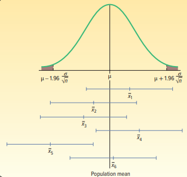
X-Zα/2σn< μ <X+Zα/2σn
X-tn-1, \alpha{}/2Sn<\mu{}<X+tn-1, \alpha{}/2Sn p-Z\alpha{}/2p1-pn<\pi{}<p+Z\alpha{}/2p1-pn Confidence Interval Estimation Formulas Estimate the true mean \mu{}=population mean X = sample mean Z\alpha{}/2 and tn-1, \alpha{}/2 = critical value \sigma{}n and Sn = std error Estimate the true proportion \pi{}=population proportion p= sample proportion Z\alpha{}/2 = critical value p1-pn = std error
Source: Workshop_slides_Week_3_with_solutions.pdf, page 20
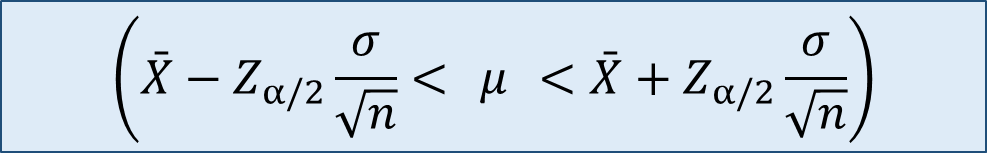
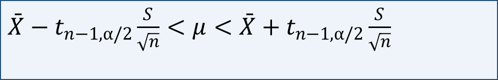
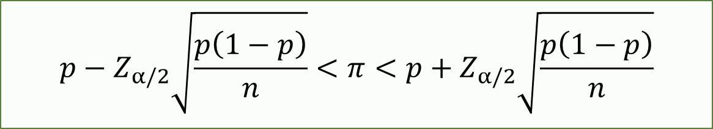
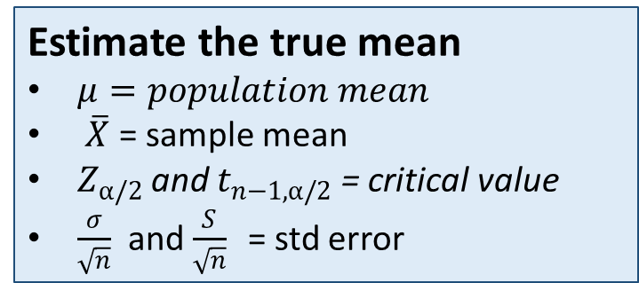
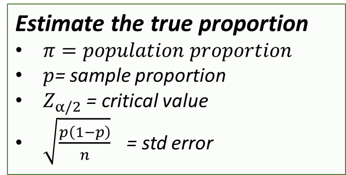
21
If the standard deviation (σ) ↑, spread of the distribution is larger (assuming all other factors remain unchanged) standard error std deviationn ↑, width ↑, estimate is less precise If the sample size (n) ↑, standard error std deviationn ↓, width ↓, estimate is more precise (assuming all other factors remain unchanged) The bigger the sample, the more information we have to increase the precision of the interval estimate of the sample mean, the narrower the interval. Factors that affect the width of a Confidence Interval Estimate x\pm{}Z\alpha{}/2\sigma{}n If the level of confidence (1-\alpha{}) ↑, critical value changes, width ↑ , the estimate is less precise (assuming all other factors remain unchanged) The more confident we are, the more values we need to include in our confidence interval, the wider the interval.
Source: Workshop_slides_Week_3_with_solutions.pdf, page 21
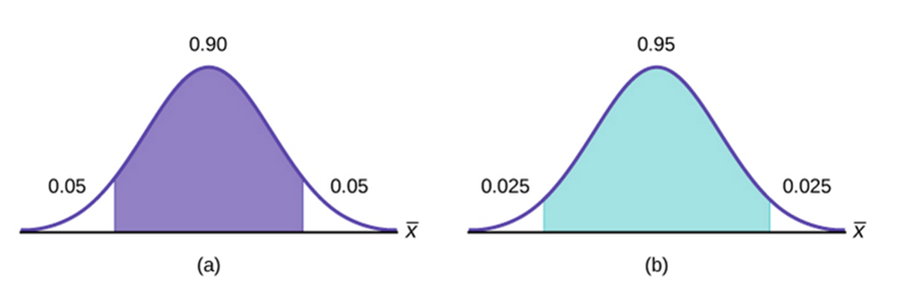
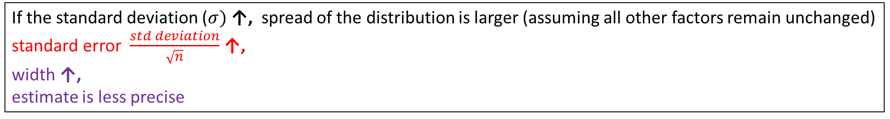
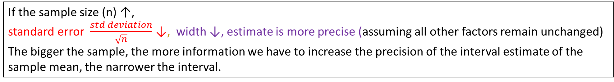
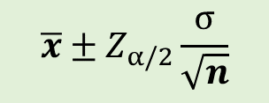
An audit company has been engaged to review the outstanding customer account balances for a mid-sized retail company. As part of the review, an analyst wants to estimate the average (mean) outstanding balance per customer account. A random sample of 80 accounts was selected from the company’s database, finding a mean value of $86.05 and a standard deviation of $22.38.
Calculate a 95% confidence interval estimate of the mean outstanding account balance. Show your working and interpret your result. Task 4: Estimating the Average Outstanding Balance
An audit company has been engaged to review the outstanding customer account balances for a mid-sized retail company. As part of the review, an analyst wants to estimate the average (mean) outstanding balance per customer account. A random sample of 80 accounts was selected from the company’s database, finding a mean value of $86.05 and a standard deviation of $22.38.
Calculate a 95% confidence interval estimate of the mean outstanding account balance. Show your working and interpret your result. Let X = outstanding account balance ($) Since n=80, we can invoke CLT and assume that X~ Nμ, σ280 Task 4: Estimating the Average Outstanding Balance
Source: Workshop_slides_Week_3_with_solutions.pdf, page 23
Visual from source page 23.
X-t79, 0.025sn < μ< X+t79, 0.025sn
Critical Value: t79, 0.025=t.inv.2t(0.05,79) = 1.99045 Task 4: Estimating the Average Outstanding Balance
Source: Workshop_slides_Week_3_with_solutions.pdf, page 24
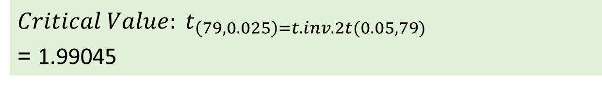
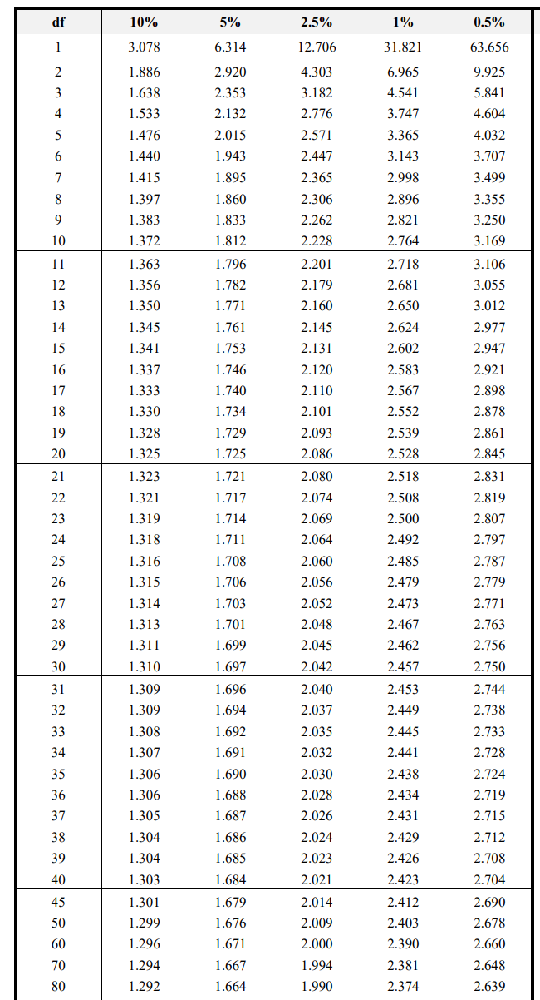
X-t79, 0.025sn < μ< X+t79, 0.025sn
Task 4: Estimating the Average Outstanding Balance 86.05-1.99022.3880 < μ< 86.05+1.99022.3880 (81.06957 < μ< 91.03043) We are 95% confident that the true mean outstanding account balance is estimated, on average, to lie between $81.07 - $91.03 X Bar 86.05 Std deviation 22.38 Sample size 80 Std Error 2.502160067 Critical Value (t) 1.99045021 LL 81.06957497 UL 91.03042503
Source: Workshop_slides_Week_3_with_solutions.pdf, page 25
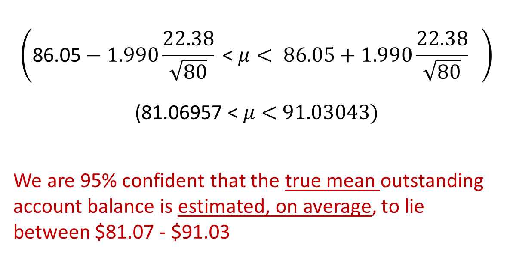
During an audit of a company, the auditor wishes to estimate the mean outstanding account balance using a sample. It is known that standard deviation is $22.38. The sample of 80 accounts have a mean value of $86.05.
An audit company has been engaged to review the outstanding customer account balances for a mid-sized retail company. As part of the review, an analyst wants to estimate the average (mean) outstanding balance per customer account. It is known that standard deviation is $22.38. A random sample of 80 accounts was selected from the company’s database, finding a mean value of $86.05. Calculate a 95% confidence interval estimate of the mean outstanding account balance. Show your working and interpret your result. Task 5: Estimating the Average Outstanding Balance _revised (Own time)
During an audit of a company, the auditor wishes to estimate the mean outstanding account balance using a sample. It is known that standard deviation is $22.38. The sample of 80 accounts have a mean value of $86.05.
An audit company has been engaged to review the outstanding customer account balances for a mid-sized retail company. As part of the review, an analyst wants to estimate the average (mean) outstanding balance per customer account. It is known that standard deviation is $22.38. A random sample of 80 accounts was selected from the company’s database, finding a mean value of $86.05. Calculate a 95% confidence interval estimate of the mean outstanding account balance. Show your working and interpret your result. Task 5: Estimating the Average Outstanding Balance _revised Let X = outstanding account balance ($) Since n=80, we can invoke CLT and assume that X~ Nμ, σ280
Source: Workshop_slides_Week_3_with_solutions.pdf, page 27
Visual from source page 27.
X-zα2σn < μ< X+zα2σn
z\alpha{}2 = z0.052 = z0.025 Norm.s.inv(0.025) = -1.95996 (add a negative sign and change this to an absolute value for the purpose of substituting in the formula) Task 5: Estimating the Average Outstanding Balance _revised 86.05-1.9599622.3880 < μ< 86.05+1.99022.3880 81.1459< μ< 90.9541 We are 95% confident that the true mean outstanding account balance is estimated, on average, to lie between $81.15 - $90.95 X Bar 86.05 Std deviation 22.38 Sample size 80 Std Error 2.50216007 Critical Value (Z) 1.95996398 LL 81.1458564 UL 90.9541436
Source: Workshop_slides_Week_3_with_solutions.pdf, page 28
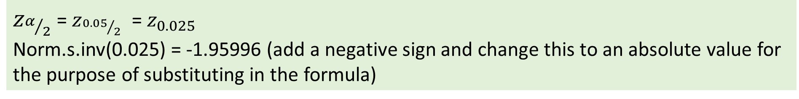
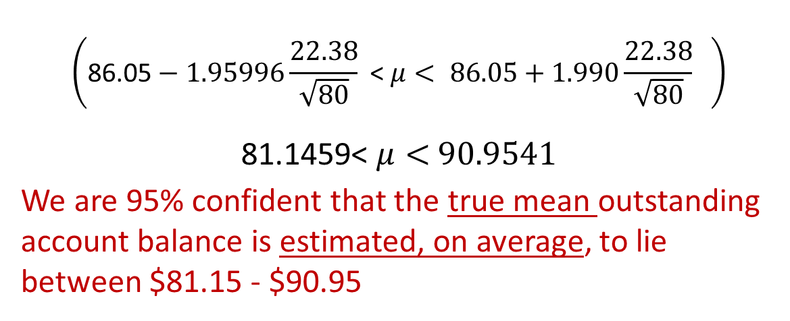
Task 6: Confidence Interval for proportions– Marketing Survey
Refer to the data set on Moodle More than half of our potential market have tried our frozen food product Let’s use the concepts of confidence interval for proportions to validate/invalidate this claim Have Tried Count of Have Tried No 42.17% Yes 57.83% Grand Total 100.00%
Task 6: Confidence Interval for proportions– Marketing Survey
More than half of our potential market have tried our frozen food product Let’s use the concepts of confidence interval to validate/invalidate this claim We are 95% confident that the true proportion of customers who tried the product is estimated, on average, to lie between 54.52% and 61.14% This range is well above half. 95% Confidence Interval for True Proportion alpha 0.05 p 0.5783 SE(p) 0.016878798 Z crit 1.968591669 Lower Limit 0.545072539 Upper Limit 0.611527461
Task 6: Marketing Survey
Let X = number of customer who have tried the product Checks for normality: np, n(1-p) \geq{}5 856*0.5783 and 856*(1-0.5783) \geq{}5 Since both values are greater than 5, the assumption of normality is valid. 0.578271-1.9599640.578271∗1-0.578271856 < π<0.578271-1.9599640.578271∗(1-0.578271)856 (0.578271-1.959964∗0.016879 <π< 0.578271+1.959964∗0.016879 ) 0.545189<π<0.611353 We are 95% confident that the true proportion of customers who tried the product is estimated, on average, to lie between 54.52% and 61.14%
Source: Workshop_slides_Week_3_with_solutions.pdf, page 31
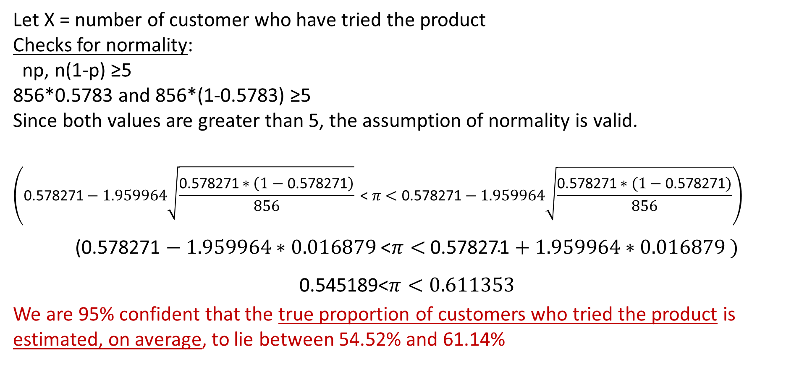
Visual from source page 31.
Task 7: Recruitment Service_in your own time
Suppose that, in a survey of 600 employers, 126 indicate that they have used a recruitment service within the past two months to find new staff. Construct and interpret a 95% confidence interval for the population proportion of employers who have used a recruitment service within the past two months to find new staff. Discuss the effect on the confidence interval estimate when you increase the level of confidence, assuming all other factors remain unchanged.
Task 7: Recruitment Service _in your own time
Let X = number of employers who have used a recruitment service within the past 2 months to find new staff n=600; x = 126; \alpha{} = 0.05; p = 126/600 = 0.21 Check for normality: np, n(1-p) \geq{}5 600*0.21 =126 and 600*(1-0.21) = 474 Since both values are greater than 5, the assumption of normality is valid. 0.21-1.9599640.21∗1-0.21600 < π<0.21-1.9599640.21∗(1-0.21)600 (0.177409 < π<0.242591) We are 95% confident that the true proportion of of employers who have used a recruitment service within the past 2 months to find new staff is estimated, on average, to lie between 17.74% and 24.26%
Source: Workshop_slides_Week_3_with_solutions.pdf, page 33
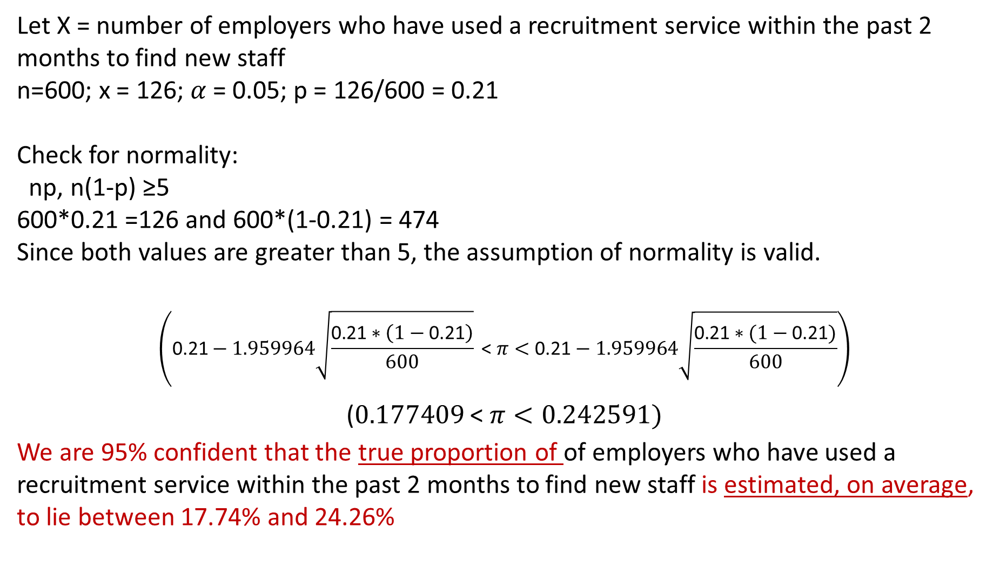
Visual from source page 33.
Task 7: Recruitment Service _in your own time
Suppose that, in a survey of 600 employers, 126 indicate that they have used a recruitment service within the past two months to find new staff. b. Discuss the effect on the confidence interval estimate when you increase the level of confidence, assuming all other factors remain unchanged. When the level of confidence increases, the confidence interval becomes wider. This results in a loss of precision, which is the price you have to pay to achieve a higher level of confidence.
Assignment work that can now be completed 🤳
Q1–Q3 complete. Q5 still needs the test result.
Due: Monday 4 January 2027, 11:55 pm Melbourne time
Worth: 20% of the unit